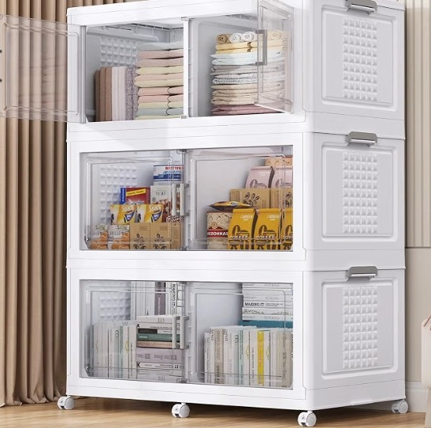

Home Organization
Best Storage Solutions for Small Kitchens
Small kitchens are the ultimate organizing challenge. You need storage that's stackable (go vertical!), visible (so you actually use what's inside), and movable (because layouts change). Here's our top pick that checks all three boxes.
Affiliate Disclosure: This post contains affiliate links. As an Amazon Associate, we earn from qualifying purchases — at no extra cost to you.
Our Top Pick: Stackable Storage Bins with Wheels
These 3-tier stackable bins are a game-changer for small kitchens, pantries, and closets. The clear doors let you see everything at a glance, the built-in wheels make rearranging effortless, and the multi-compartment design keeps everything tidy.

Stackable Storage Bins with Lid (3-Pack)
Extra-large 600Qt capacity, collapsible design, clear doors, dividers, and smooth-rolling wheels.
✅ Pros
- Stackable 3-tier design saves floor space
- Clear doors — see everything inside
- Wheels make it easy to move
- Multi-compartment with dividers
- Cute, clean white finish
⚠️ Cons
- Assembly required
- Measure your space first
Why Stackable Storage Wins
- Vertical space: Most small kitchens waste vertical space. Stacking bins use it.
- Visibility: Clear doors mean no more mystery containers in the back.
- Mobility: Wheels let you pull the whole unit out for deep cleaning.
More Small-Kitchen Storage Ideas
- Under-sink organizer — double your under-sink space. Check price →
- Over-door pantry rack — dead space becomes storage. Check price →
- Pull-out cabinet organizer — no more digging in deep cabinets. Check price →